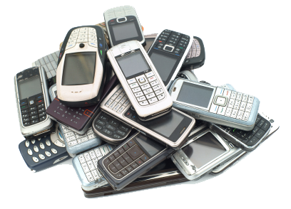
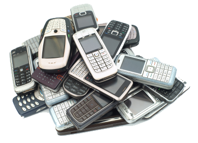

Past
From the brick phone, to the clamshell, and to the side kicks...Cell Phones have evolved immensely since 1983, both in design and function. The first handhelp cell phone, the Motorola DynaTAC 8000X was invented on March 13, 1984. It sold for $3,995. Though huge by today's standards, it was considered the first mobile phone because it was small enough to carry. Since then, technology has advanced and companies figured out how to pack all the features their customers wanted into a smaller, portable, more affordable mode. Early cellphones primarily were just for talking. Not everyone carried cellphones as they were mainly for business or emergency. The earliest smart phones let users access email, and use phone as a fax machine, pager, and address book.
 
